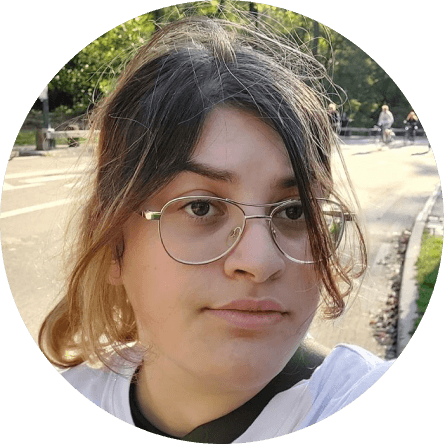
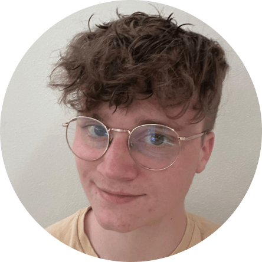

Het ontstaan
Wat begon als een simpele schoolopdracht, groeide al snel uit tot iets waar we écht enthousiast over zijn. Het idee om een podcast te maken kwam met oneindig veel mogelijkheden, maar al snel wisten we het: het internet zou ons onderwerp worden. Het is tenslotte een plek waar je alles kunt vinden – van diepe duiken in de geschiedenis tot compleet onverwachte ontdekkingen waar je uren in blijft hangen. De echte aanleiding voor onze podcast? We raakten steeds meer gefascineerd door hoe makkelijk het is om online verdwaald te raken. Wat begint met een onschuldig zoekwoord, eindigt soms in een wirwar van halve waarheden, misinformatie en risico’s waarvan je niet eens wist dat ze bestonden. We wilden niet alleen begrijpen wat er speelt, maar er ook over praten – op een manier die iedereen mee kan nemen in dat avontuur. Zo ontstond onze podcast: een plek waar nieuwsgierigheid en een frisse blik op het internet samenkomen. Sluit je aan en ontdek samen met ons wat er echt allemaal achter de schermen van het web gebeurt!
Over ons
-

Sarah Pole
Hi ik ben Sarah, ik hou me op het internet vooral bezig met nieuwe game arts en animaties die aanvullen bij mijn interesses. Ook animatie YouTube videos vind ik helemaal de bom om te kijken en om van te leren. Naast me creatieve kant game ik ook veel en hou ik me bezig met populair internet related nieuws.
-

Devin van de Ketterij
Hoi, ik ben Devin uit Alkmaar! Als ik niet achter een simracestuur zit of een game aan het ontdekken ben, struin ik het internet af voor interessante weetjes over geschiedenis. Mijn research doe ik vooral via YouTube-video's en af en toe een goed artikel. Het internet is een geweldige bron van inspiratie – en laten we eerlijk zijn, ook een beetje verslavend.
-
Nienke Smit
Hey! Ik ben Nienke, student Communicatie en Multimedia Design aan de Hogeschool van Amsterdam. Naast dat ik het leuk vind om creatief bezig te zijn, speel ik in mijn vrije tijd ook graag gitaar of luister ik naar muziek. Maar ik leef niet alleen maar binnen, als ik naar buiten ga, ga ik het liefst aan de wandel of spreek ik af met vrienden. Bij concerten van Krezip kan je mij ook met enige regelmaat vinden. Festivals in de zomer zijn voor mij ook iets wat ik niet wil missen.
Ons doel
Wij zijn onze podcast begonnen met de motivatie om bewustzijn te creëren over de keerzijden van het internet. Hierbij willen we iedereen die iets vervelends heeft meegemaakt een platform bieden om hun verhaal op te doen, dit nu middels een podcast en forum. Want wij hebben het gevoel alsof het hier niet vaak genoeg over gaat, hoe verslavend en sociaal juist het internet wel kan zijn.
Begin met luisteren